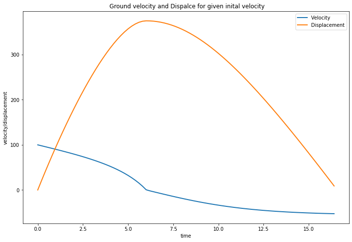
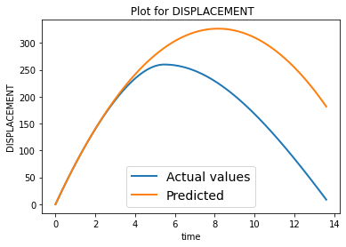
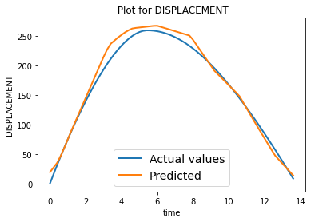
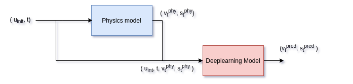
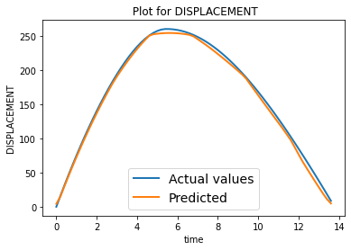
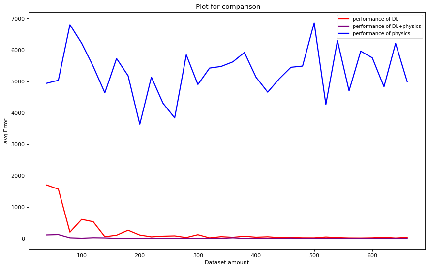

Welcome to our Physics based Deep Learning Experiments
Contents
Welcome to our Physics based Deep Learning Experiments¶
Hello there!!, we are planning on a set of experiments involving physics based deep learning. We begin by setting up a toy physical simulation and setup a task that can be completed via physics alone and eventually add complexities to the system and try to leverage deep learning.
A Gentle Start¶
Let us start by exploring a simple physics problem of predicting the displacement covered by a vertically projected mass in presence of air. For the purpose of this experiment, we consider that the actual dynamics of the projected mass are modelled by the equations described below which account for resistance of the medium. We will generate ground truth data by applying above motion equations, then assuming we have no knowledge of the actual(with air resistance) dynamics, we perform experiments to predict the displacement in only physics, only deep learning and physics + deep learning setting.
\(v_{term} = \sqrt{\frac{mg}{c}}\), where \(c = \frac{π}{16}\rho D^2\)
For the forward motion from the ground to the top (Ascent)
\(s_t = u_0t + \frac{v_{term}^2}{g} ln\left(cos\left(\frac{gt}{v_{term}}\right)\right) \)
\(T_{ascent} = \frac{v_{term}}{g} tan^{-1}\left(\frac{u_0}{v_{term}}\right)\)
For the return motion from the top to the ground (Descent)
\(s_t = H_{max}-\frac{v_{term}^2}{g} ln\left(cosh\left(\frac{g(t-T_{ascent})}{v_{term}}\right)\right)\)
\(T_{descent} = \frac{v_{term}}{g} cosh^{-1}\left(e^{\frac{gH_{max}}{v_{term}^2}}\right)\)
Total time of flight
\(T_{flight} = T_{ascent}+T_{descent}\)
Note : As ground truth, we consider the quadratic drag model for a projectile from here and here.
The Simulation¶
We first show a simulation of the proposed particle mass using the above equations for a given initial velocity to get an idea of how the displacement varies with time. We will first calculate the time of flight(\(T_{flight}\)) for the particle, then record displacement covered at each time step starting from \(t=0\) to \(T_{flight}\) in step sizes of \(\frac{1}{5}s\).
We consider a spherical particle of mass 30g, diameter 2 cm and air density as \(1.225 \frac{kg}{m^3}\) for this simulation.

The Data¶
Now that we have a physics simulation, let us run few simulations and collect the data. i,e we input few random initial velocities, times and get the corresponding displacements during the flight.
For this specific task, let us keep the initial velocities between \(0\) to \(100\) and time step range betwen \(0\) to time of flight \(T_{flight}\)
The collected data would look like this, \(X, Y\) where
\(X = (u, t), Y = (s_t)\)
\(u, t\) represent initial velocity and time step, where as \(S_t\) represents displacement covered after time \(t\).
We create varied size datasets of points and split the dataset collected into train and test respectively.
Only Physics¶
We assume that we are not aware of the exact dynamics followed by the particle in the generated data, however we know the equations of motion followed by a particle in vaccum. Using this physics knowledge of ours, let us try to predict the displacement and compare our prediction with the ground truth.
The equations of motion for a vertically projected particle mass in vaccum are as follows.
\(S_t = u_0t-\frac{1}{2}gt^2\), where \(g \sim 10 \frac{m}{s^2}\)
We write our prediction function just based on physics, use it to create a simulation and also calculate the loss on the test datset which we have created earlier.
The following figure shows a typical trajectory predicted by physics vs the actual trajectory.

Only Deep Learing¶
Now, we try to leverage our modern deep learning techniques to predict the quantities. We will use a simple MLP for the prediction. We start by defining the model and loss employed.
We used a simple model with the following architecture, The first layer takes 2 inputs(\(u_{initial}, t\))
----------------------------------------------------------------
Layer (type) Output Shape Param #
================================================================
Linear-1 [-1, 1, 16] 48
ReLU-2 [-1, 1, 16] 0
Linear-3 [-1, 1, 16] 272
ReLU-4 [-1, 1, 16] 0
Linear-5 [-1, 1, 16] 272
ReLU-6 [-1, 1, 16] 0
Linear-7 [-1, 1, 2] 34
================================================================
Total params: 626
Trainable params: 626
Non-trainable params: 0
----------------------------------------------------------------
The loss employed is the standard MSE loss.
After training a few epochs, the loss converged. Using this trained model, we created the simulations and compared with ground truth as shown below. We trained the model for 100 epochs with 800 data samples. The resulting average test loss over 200 test datasamples is 34.33703.

Physics + Deep Learning¶
Now Let us try physics based DL aproach for predicting the displacement. For physics based DL approach, we will use the same dataset created, with the given input pair (\(u_{init}, t\)), and output pair (\( v_{t}, s_{t}\)). We will first pass the input pair into the physics model to predict the output ((\( v_{t}^{phy}, s_{t}^{phy}\))). We concatenate this ouput and input pair ( \(u_{init}, t, v_{t}^{phy}, s_{t}^{phy}\) ), and submit this input to our DL model to predict the output (\( v_{t}^{pred}, s_{t}^{pred}\)).

The architecture for the DL is similar to previous only DL method, but the input neurons are increased from 2 to 4. We used MSE loss similar to the previous DL only method to learn the residuals. We trained the model for 100 epochs with 800 data samples. The resulting average test loss over 200 test datasamples is 9.13702.

So by inducting the physics into the DL model, we observed that model predicted the displacements better than just DL based methods.
Comparison¶
Now that we have seen the three methods for predicting desplacement, Let us try to compare the perfromance of these methods. The figure below dipicts a plot for comparing the three methods according to the availability of data, showing the test loss trends w.r.t dataset size.
